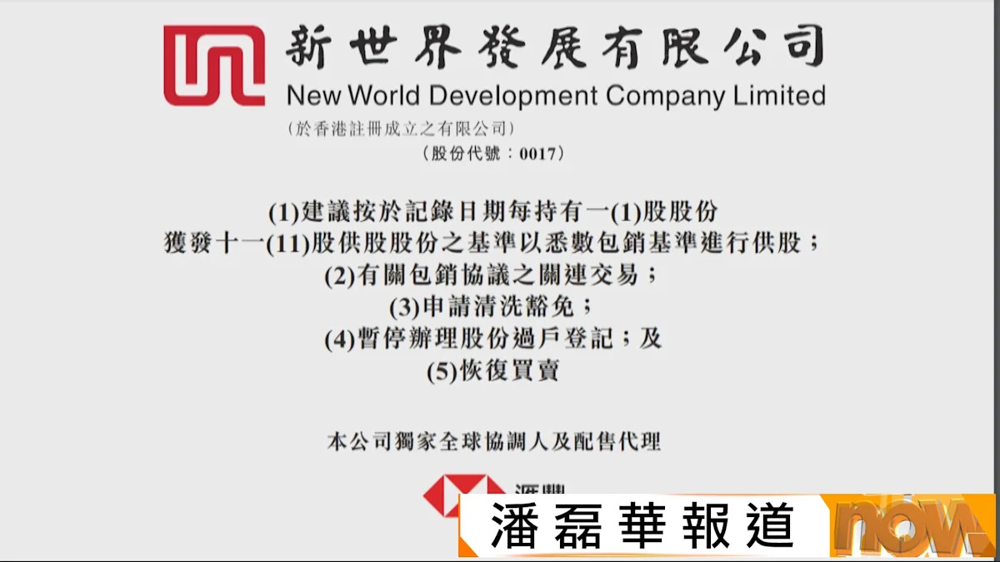
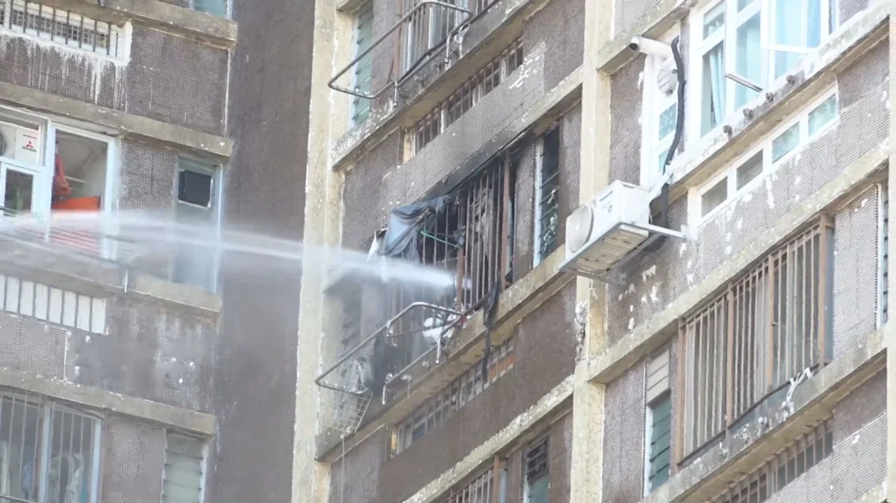
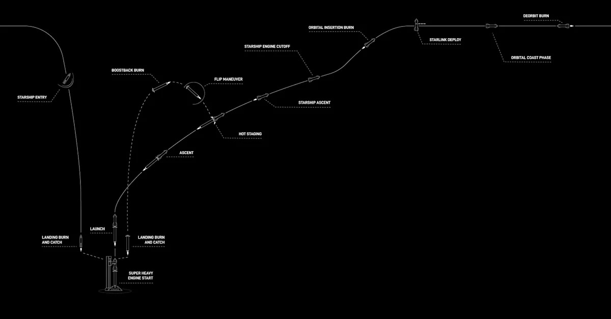
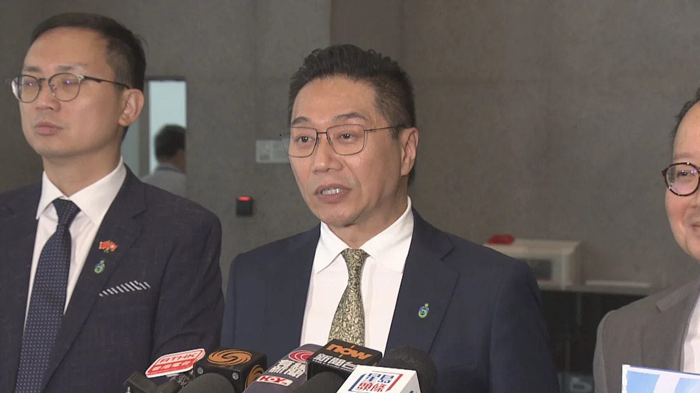
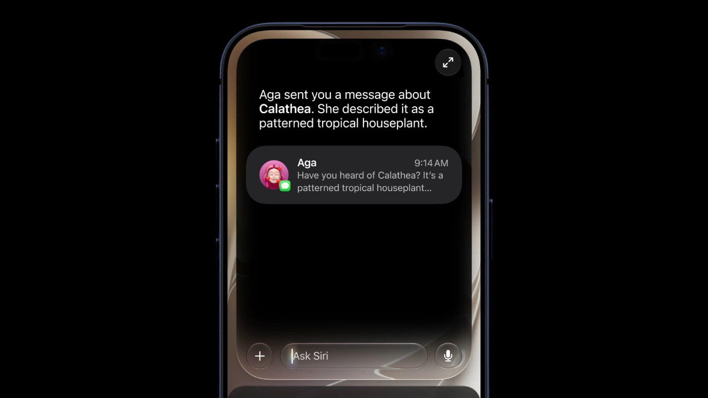
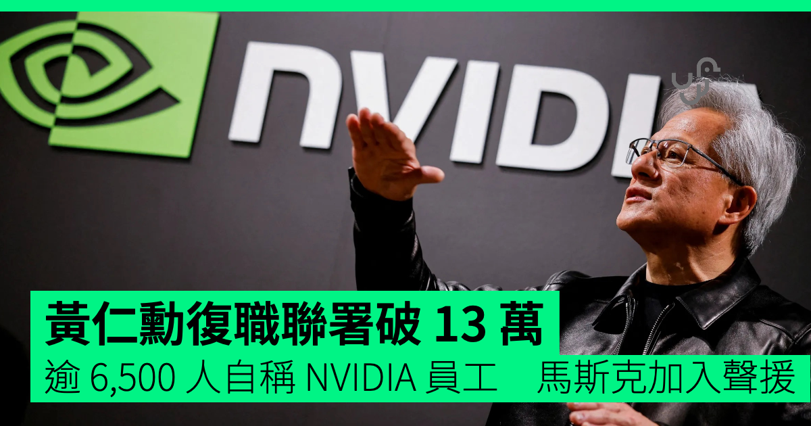

📰
無綫新聞 TVB News
無綫新聞 TVB News
無紙證券市場制度今日正式實施 證監會指標誌香港金融基建邁向全面數碼化
醞釀逾 20 年的證券無紙化制度今日正式實施，即日起發行新股率先全面無紙化，投資者可以個人名義持有電子股票；現有約 2,700 間上市公司於 5 年內分批過渡，最終停止印發紙本股票。
新世界發展「1供11」供股集資 249 億元、折讓逾八成，今日復牌成全城焦點；黃仁勳考慮重返 Nvidia，矽谷組「戰情室」遊說董事會。無紙證券制度今日實施，本港第三季 GDP 增長 5.2%，AI 轉口貿易成增長引擎。
醞釀逾 20 年的證券無紙化制度今日正式實施，即日起發行新股率先全面無紙化，投資者可以個人名義持有電子股票；現有約 2,700 間上市公司於 5 年內分批過渡，最終停止印發紙本股票。
宏福苑大火即將一周年，特首李家超要求官員在本屆政府任期內完成相關修例；由政務司司長主持的跨部門督導委員會今日召開專題會議，審視獨立委員會報告 120 項建議的落實進度。

📰新世界發展建議按「1供11」供股集資 249 億元，每股供股價 0.9 元，較停牌前收市價折讓逾八成；大股東周大福企業悉數供股並全數包銷，集資所得將用作減債及為待發展項目提供資金，今日復牌。
美國空管通訊系統故障，全國航班一度停飛約 4 小時，逾 1.6 萬班機取消或延誤；運輸部長批評系統殘舊，促國會撥款升級，預計 16 日全面恢復。
本港第三季本地生產總值按年增長 5.2%，整體出口逾 7,000 億元，按年升逾六成；商經局局長丘應樺指增長主要受惠 AI 相關電子產品轉口，但提醒要留意 AI 高峰會否回落。
財政司司長陳茂波表示，點心債發行規模首度超越美元債券，香港金融與貿易正由「量」的累積朝向「值」的提升；港交所將推出離岸人民幣債券指數，涵蓋 300 多隻在港上市債券。
維港泳首次因水流太急取消最後一組賽事，約 700 名泳手受影響，大會致歉並安排退款，考慮讓受影響泳手下屆優先參賽。
最大國產郵輪愛達·花城號展開第二個試運營航次，首度停靠啟德郵輪碼頭；船上融入嶺南元素，設港式火鍋及古箏彈奏粵語歌，瞄準大灣區旅客。
中央港澳辦主任夏寶龍今日在深圳聽取有關工作情況匯報，港澳辦未交代涉及哪些事項。
大埔宏福苑火災一周年在即，大埔聖母無玷之心堂舉行彌撒悼念亡者；天主教香港教區輔理主教夏志誠主持感恩聖祭，為亡者祈禱。

📰黃大仙下邨龍光樓低層單位起火，消防半小時內救熄，單位客廳發現一具燒焦屍體，死者為年逾 80 歲的獨居女長者；屋內雜物堆至天花板，初步懷疑雜物首先起火。

📰SpaceX 星艦第 15 次試飛，飛船本體首次由發射塔機械臂「筷子」成功接住；同一任務的超重型助推器則中止回收，於墨西哥灣上空解體。

📰自由黨領導層換屆，邵家輝連任主席，黨魁一職取消；黨內新設常務副主席，由李鎮強及陳曉峰出任，副主席增至四名。
澤連斯基表示，美國提出以烏克蘭加入北約換取放棄頓巴斯；俄羅斯外長稱莫斯科不會同意任何不顧及俄方利益的解決方案，阿布扎比會談在停火及領土議題上陷重大分歧。
新世界在供股文件中披露，目標於 2031 年底前透過物業發展合約銷售及資產出售套現 1,500 億至 2,000 億元，總債務減少約 400 億至 500 億元，以恢復可持續現金流。
控股股東周大福企業正與潛在投資者磋商可能投資，供股及投資完成後，控股股東及一致行動人士持股仍高於擴大後股本三成，維持單一最大股東地位。
美股上周五個別發展，道指微升，納指及標指受壓；英偉達全周大跌 13%，一周市值蒸發逾 5,700 億美元，市場持續消化黃仁勳離任消息及通脹憂慮。
港股上周先高後低，恒指周初高見 24,738 點後受美國晶片出口管制陰霾拖累，最終收報 23,637 點；文章分析黃仁勳風波如何引爆波及中資科網股的算力封鎖戰，以及阿里巴巴是否遭錯殺。
黃仁勳辭職後，英偉達股價四日內大幅下挫；散戶及部分大投資者趁低吸納，文章探討「後黃仁勳時代」對 AI 市場的影響。
上周五恒指收報 23,637 點，跌 370 點或 1.5%；北水全日淨流入 23.33 億元，淨買入最多為騰訊、智譜及壁仞科技，淨賣出最多為阿里及中芯。
信達生物 7 款創新產品納入新版國家醫保藥品目錄，其中 4 款首次納入，涵蓋腫瘤等多個領域；新版目錄將於明年 1 月 1 日起實施。
翰森製藥創新藥阿美樂新增一項適應症、昕越新增兩項適應症納入新版國家醫保目錄，已上市創新藥所有獲批適應症悉數納入，有助提高患者負擔能力及可及性。
先通醫藥－B 今日至周四招股，每股作價 52 至 68 元，集資最多約 4.5 億元，每手 50 股，入場費 3,434.29 元，預期下周二掛牌。
財政司司長陳茂波在網誌表示，香港海運周 2026 今日揭幕，港交所明日舉行離岸人民幣債券指數發布儀式，香港金融與貿易正由「量」的加速累積朝向「值」的深度提升。
阿B形容「供又死，不供又被攤薄死」，小股東左右為難；同文亦提到建滔集團以 27 億元收購觀塘海濱道物業，較 2017 年成交價貶值七成。
詳列供股條款：每股供股價 0.9 元，較停牌前折讓約 81.5%，發行約 276.83 億股，集資淨額約 241 億元；所得款項用於銀行貸款再融資、償付債務及發展項目，並將餘下貸款到期日延長兩年。
供股公布前，彭博引述知情人士報道新世界擬集資最多約 250 億元，鄭氏家族計劃參與供股並注入新資金；公司截至 6 月底總債務約 1,433 億元，淨債務約 1,263 億元。
國家稅務總局披露，離岸信託個人所得稅累計申報超過 1,600 億元，10 月當月入庫超 1,200 億元，帶動當月全國個人所得稅收入按年增長近九成；文章拆解「21 號公告」下 20% 稅率的政策背景，問這是新開徵的富人稅，還是把本該繳的稅收回來。
《金融時報》引述知情人士報道，黃仁勳正考慮重返 Nvidia 行政總裁職位；矽谷高層正組織「戰情室」遊說董事會讓他復職，馬斯克等人已公開支持要求他回歸的聯署。

📱據《彭博》Power On 通訊報道，Apple 有望在 2027 年全球開發者大會上發佈智能眼鏡，同年稍後上市，核心賣點圍繞強調私隱保護的 Secure Exclave 技術及 Siri AI 功能。
新款 Apple TV 4K 搭載 A19 晶片，記憶體倍增至 8GB，但每個應用程式仍受限於系統設定的 2GB RAM 上限，圖形密集型遊戲仍可能觸及記憶體天花板。
 ePrice.HK 綜合新聞
ePrice.HK 綜合新聞
外媒公開五款 Galaxy S27 靜態桌布，以不同色調配搭簡約緞帶圖案；外界猜測三星下一代旗艦可能採用相應機身顏色，Pro 及 Ultra 版傳獨佔酒紅色。
《英雄聯盟》2026 全球總決賽，來自中國 LPL 賽區的 BLG 以 3:1 擊敗韓國 LCK 賽區的 GEN，隊史首次捧起召喚師杯，LPL 時隔 1,834 天再次奪冠。

📱要求黃仁勳復職的網上聯署「Stand with Jensen」已突破 13 萬人，逾 6,500 人自稱 NVIDIA 員工，馬斯克亦加入聲援。
Google Wallet 正式接入 Gemini，美國全量用戶可用；經 Plaid 連接銀行戶口後，可解鎖個人理財洞察功能。
Meta 正讓員工測試名為 Takes 的預測市場 App，參與者可用虛擬 cred 積分猜測新聞或其他事件結果，猜中獲分、猜錯扣分；現時未向公眾開放，亦未確定會否正式推出。
《金融時報》引述知情人士報道，Nvidia 董事會已接觸 Arm 執行長 Rene Haas，將他視為接替黃仁勳的潛在人選之一；Haas 曾在 Nvidia 任職七年，2022 年起接掌 Arm。
截至 11 月第 45 周，iPhone 18 Pro 系列在中國市場銷量已達 782.87 萬部，推算可能已突破 800 萬大關；系列 9 月 18 日開售，Pro 起售 9,999 元、Pro Max 起售 10,999 元。
Meta Muse Spark 1.4 疑似在 RocksDB 公開 PR 中現蹤。
 當代科技 TechNow
當代科技 TechNow
Google 公布 Rust 成效數據：Android 記憶體安全漏洞首次跌穿 20%，新代碼回滾率低四倍。
南洋理工大學等團隊提出 NEO-VLA，將原生視覺語言模型引入機械人動作學習，動作模組可直接讀取主幹不同深度的表徵；依托超 223 萬條軌跡的大規模多機械人數據集訓練，真機任務表現優於同類模型，單張 RTX 3090 推理延遲低。
李沐加入 Aimotion，出任聯合創始人兼首席技術官。
韓松團隊讓 Qwen3.8-27B 在單張 5090 上操作機械，表現逼近 GPT-6 Astra。
一萬個 AI 分身在 88 小時內攻下千禧難題，奧特曼兩夜沒睡。
Claude 能加入視頻會議，邊聽邊寫方案，白板當場畫。
Claude 進軍微軟 Office 全家桶；報道稱微軟市值一夜蒸發 6,000 億美元。
OpenAI 自曝 AI 摸進黑客考場後台，交卷時隻字不提。
Anthropic 最瘋神圖流出，一張圖嚇得研究員當場辭職。
中科院自動化所、美團等推出 RSI 綜述，探討 Agent 如何越用越強。
Gemini 4 Hydrogen 發布，主打一個快。
Fable 5.2 登頂 RoboColiseum 新榜單。
三星電子將擴建位於得州奧斯汀的晶片工廠，為 SpaceX 生產星鏈衛星搭載的 STM32V8 微控制器；三星此前已在得州布局晶圓代工，原有客戶涵蓋特斯拉、英偉達、AMD 的 AI 晶片訂單。